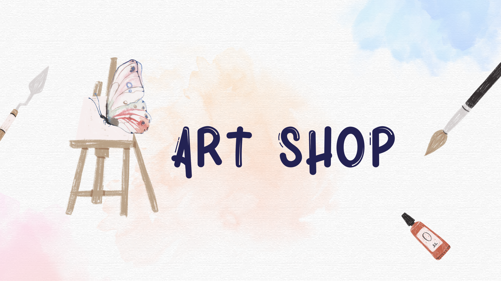
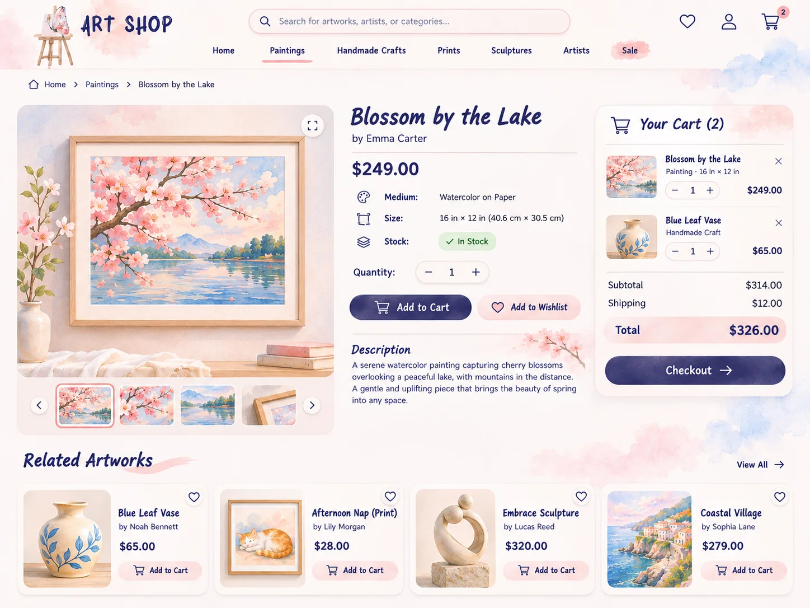
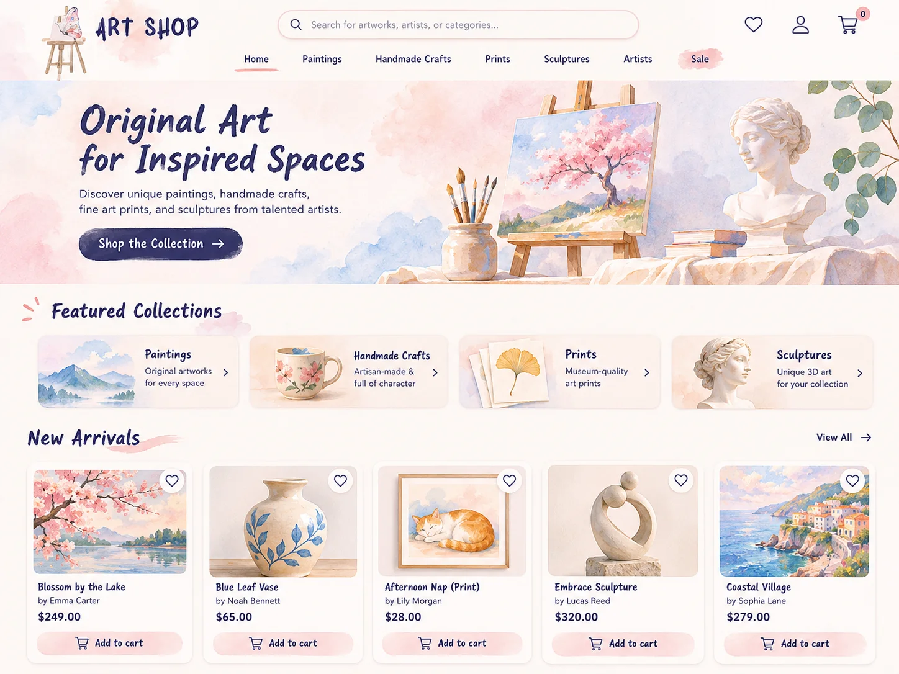
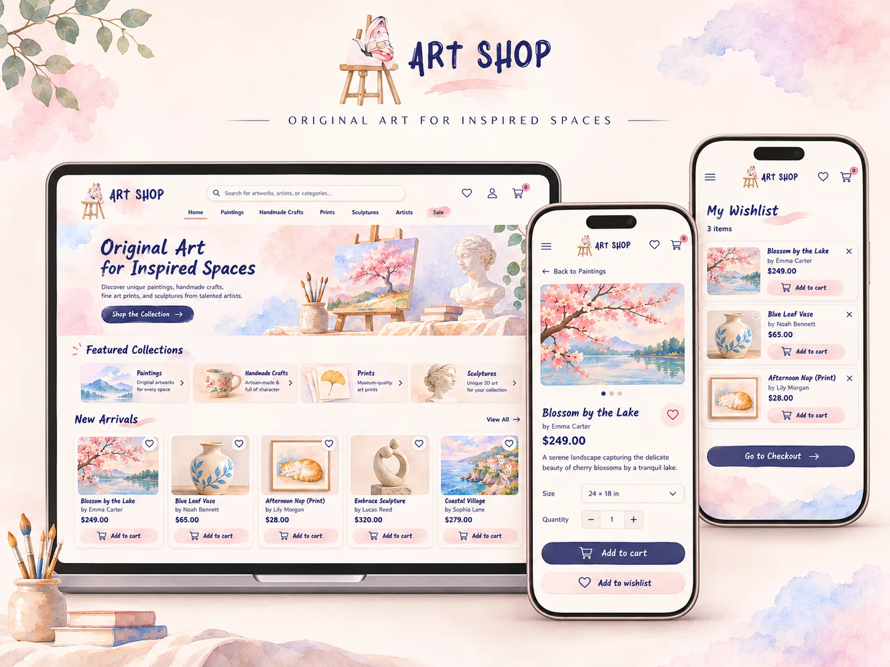
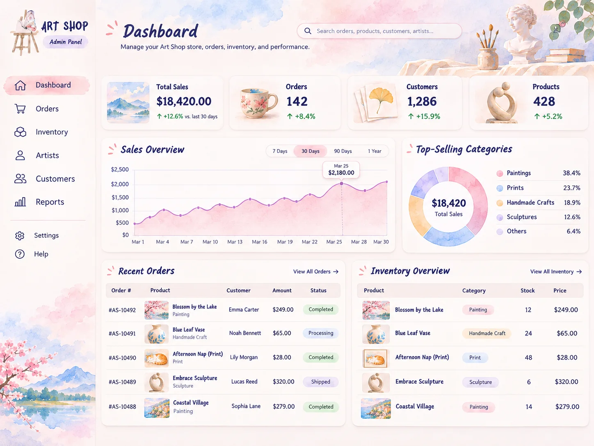
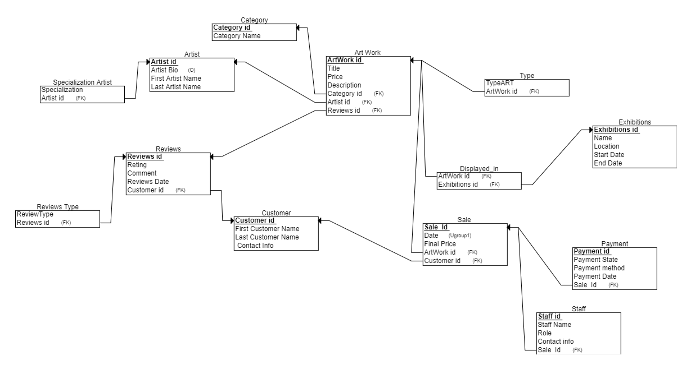
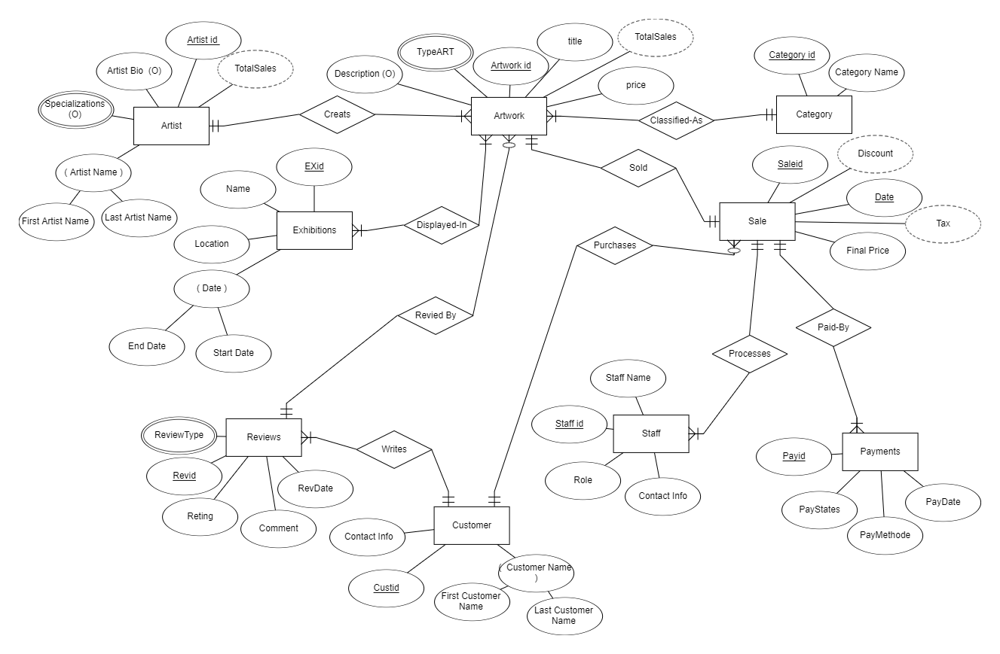
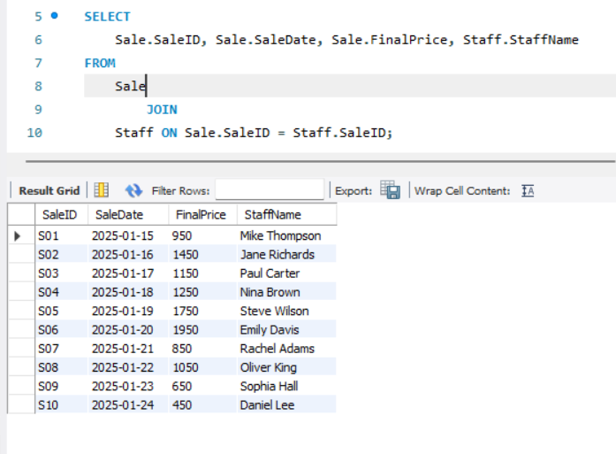

Artwork representation
Structuring the information that describes a piece of art as part of the marketplace domain.
An artwork buying-and-selling software project that I built using Object-Oriented Programming. It explores how to organize a marketplace around distinct objects, roles and interactions.

ArtShop is an OOP-based practice project modeled around an online artwork marketplace. The goal was to make buying and selling art more than an interface idea: the marketplace has items, people and actions that need a clear software structure.
I approached the problem through Object-Oriented Programming to organize responsibilities, interactions and the marketplace workflow into maintainable pieces.
Structuring the information that describes a piece of art as part of the marketplace domain.
Modeling the two sides of the buying-and-selling workflow and what each needs to do.
Thinking about the responsibilities of different objects and their relationships.
Practicing software components that can be understood and adapted more easily.
Connecting the software model to the real-world steps of listing, browsing and purchasing artwork.
Using OOP principles as a foundation for future iteration of the project.
Four original watercolor concept artworks created for this portfolio. These help communicate the look and mood of a possible ArtShop interface; they are not screenshots from the coded OOP project.




Real images extracted from my ArtShop project presentation, including the relational model and SQL query results.


